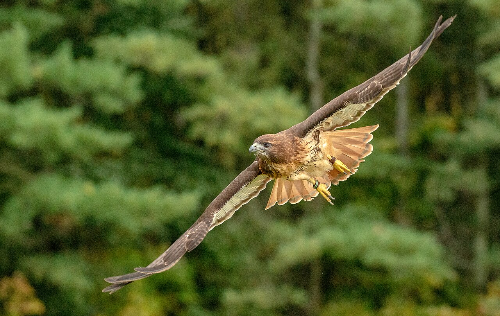

Resources → Gear & Equipment
Falconry Scales & Health Tools: Weight Management Equipment
Daily weighing is the cornerstone of falconry management. A raptor's weight determines its motivation, responsiveness, and hunting drive. Accurate scales and health monitoring tools are essential for every falconer, from apprentice to master.
Why Daily Weighing Matters
A raptor's weight directly correlates with its willingness to hunt and return to the falconer. At "fat weight" — the bird's natural, well-fed weight — a raptor has no motivation to cooperate. It will sit in a tree and ignore you. At proper "flying weight," the bird is keen, responsive, and eager to hunt.
The difference between responsive and unresponsive can be as little as 20–50 grams in a red-tailed hawk (roughly 2–4% of body weight). For smaller species like kestrels, the margin is just 5–10 grams. This precision requires a scale accurate to at least 1 gram.
Weighing also serves as an early health indicator. Sudden weight loss despite normal feeding can signal illness. Weight gain during molt is expected and healthy. Keeping a daily weight log helps you spot trends and anomalies before they become emergencies.
Types of Falconry Scales
Digital Gram Scales
The most common scale type in falconry. A flat platform digital scale that reads in grams with 1g or 0.1g precision. The bird stands on the platform (often with a perch attachment) and the weight is displayed on an LCD screen. Look for scales with at least 2,000g capacity for hawks and 5,000g for eagles.
Key features: Tare function (zeroes out the perch weight), hold function (locks the reading when the bird shifts), gram/ounce toggle, auto-off disable (so it stays on while you weigh).
Perch Scales
A dedicated falconry scale with a built-in T-perch. The bird steps onto the perch and is weighed automatically. Perch scales are more convenient than flat scales because the bird naturally stands on the perch without coaxing. Some models connect to apps via Bluetooth for automatic logging.
Perch scales are more expensive ($80–$200) but save time during daily routine. The perch surface should be wrapped in cord or leather for the bird's comfort and grip.
Hanging/Spring Scales
An older method where the bird is placed in a cloth bag or cone and suspended from a spring scale. Less accurate than digital scales and more stressful for the bird. Rarely used by modern falconers except as a backup.
Weight Management Basics
Weight management is the most important skill in falconry. Your sponsor will guide you through the process, but here are the fundamentals:
- Trap weight — The weight at which a wild-caught bird was trapped. This is your starting reference point.
- Fat weight — The bird's weight when fully fed and comfortable. Usually 10–15% above flying weight. The bird is calm but unresponsive to training at this weight.
- Flying weight — The target weight at which the bird is keen, responsive, and hunts effectively. Typically 5–10% below fat weight, determined gradually through careful observation.
- Sharp weight — Too low. The bird is lethargic, weak, or frantic. This is dangerous and indicates the falconer has reduced weight too aggressively. Immediate feeding is required.
Finding the correct flying weight is a gradual process. You reduce food slightly over days, weighing each morning before feeding. When the bird first responds eagerly to the lure or fist, you have found the approximate flying weight. Fine-tuning continues throughout the season based on the bird's behavior, weather, and activity level.
Keeping a Weight Log
Record the bird's weight every morning along with: what it ate the previous day, weather conditions, behavior notes, and any training or hunting activity. Over weeks, patterns emerge that help you predict the bird's mood and adjust feeding accordingly. Many falconers use spreadsheets or dedicated apps for this.
Health Monitoring Tools
- Casting analysis — Raptors cast (regurgitate) a pellet of indigestible material (fur, feathers, bone) after each meal. Examining castings tells you about digestive health. Foul-smelling or discolored castings can indicate illness.
- Mute charts — The color, consistency, and frequency of mutes (droppings) indicate health. Bright green mutes suggest the bird is empty; chalky white with dark center is normal; watery or bloody mutes require veterinary attention.
- Crop tube / feeding syringe — Used for emergency feeding or medication delivery when a bird cannot eat on its own. A crop tube slides gently into the esophagus to deliver food directly to the crop. Essential for rehydrating a dehydrated bird.
- First aid supplies — Styptic powder (for talon/beak bleeding), Vetrap bandage, tweezers, saline solution, antiseptic. Keep a dedicated raptor first aid kit in your hawking bag.
- Keel assessment — Feeling the bird's keel (breastbone) tells you about muscle condition. A sharp, prominent keel means the bird is too thin. A keel buried under muscle means the bird is heavy. Your fingers should feel the keel with slight muscle padding on each side.
Recommended Products
High-precision digital scale with 0.1g accuracy and 3000g capacity. Tare function, hold button, and stainless steel platform.
Dedicated perch scale for falconry with T-perch. Digital readout, tare function, and 5000g capacity for large raptors.
Styptic powder, Vetrap, saline, tweezers, and antiseptic. Pre-assembled kit for field emergencies with raptors.
Soft-tip crop tube with feeding syringe for emergency rehydration and medication. Essential for raptor health emergencies.
Browse Health & Scale Sellers
Find verified sellers of falconry scales and health tools in our directory.
Browse ListingsSell Health Tools?
List your falconry health products. Featured listings appear first in search results.
Add Your Business